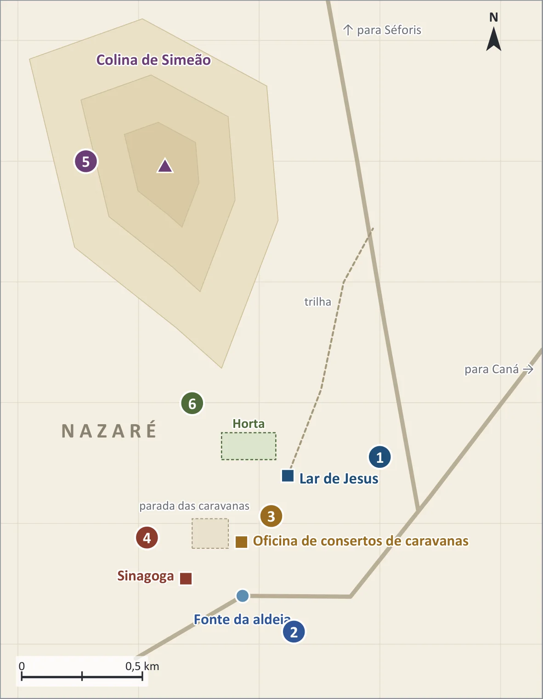
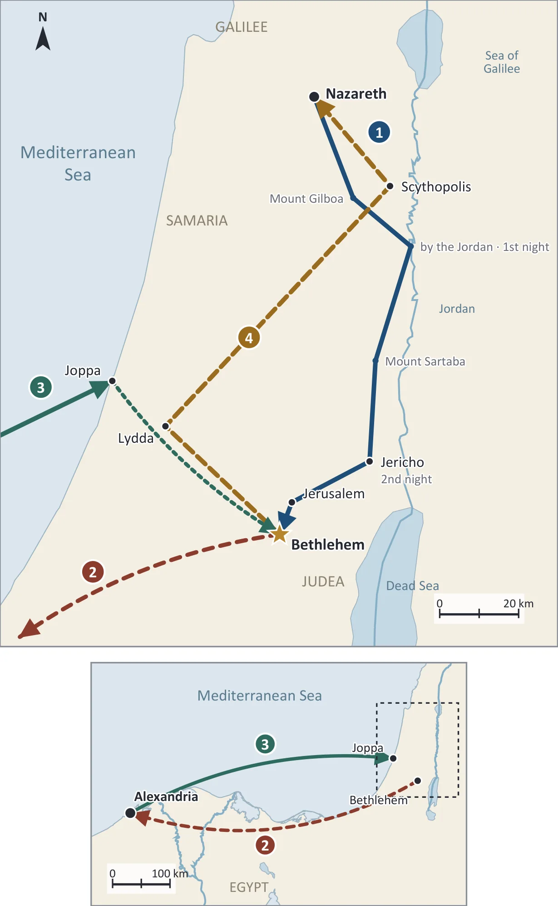
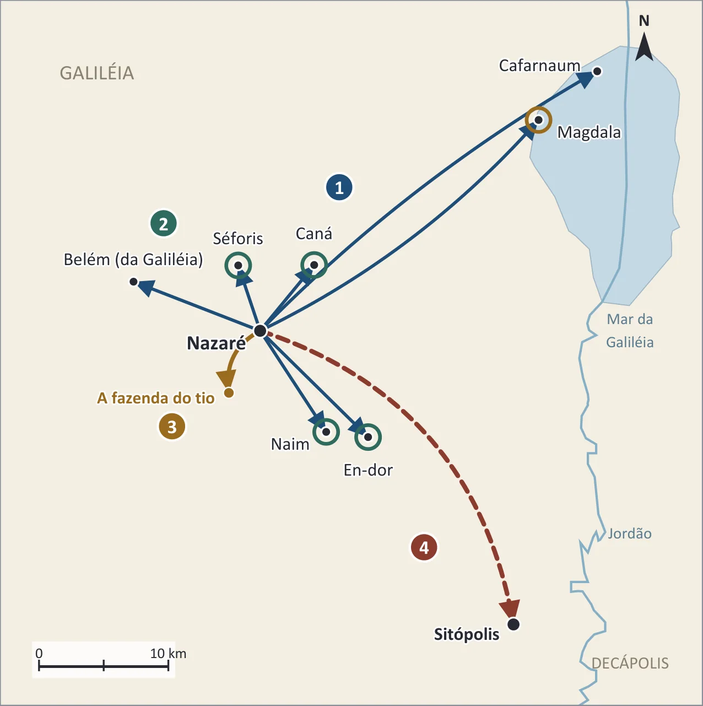
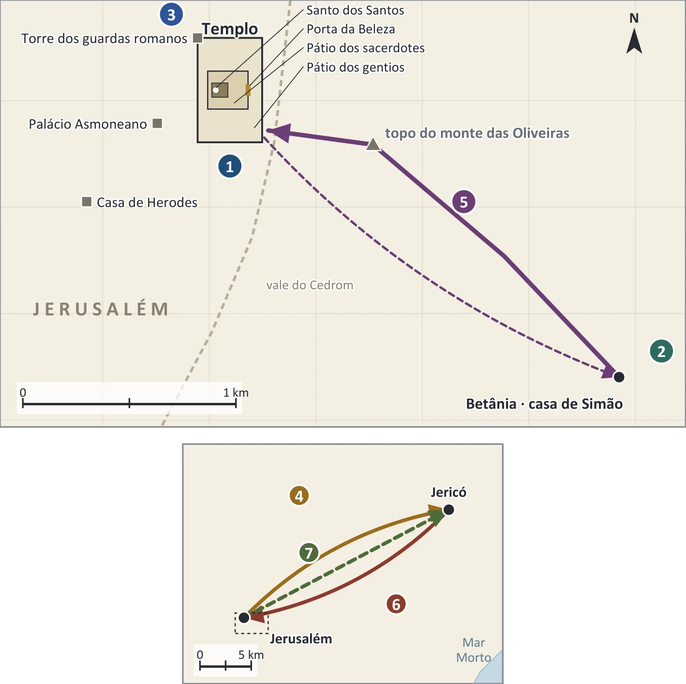
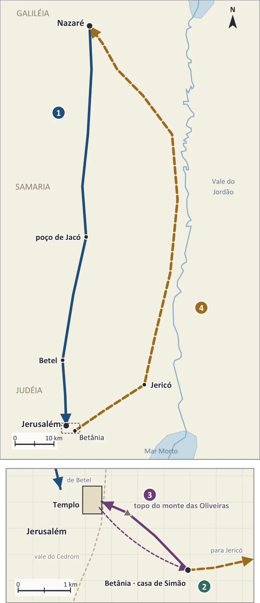
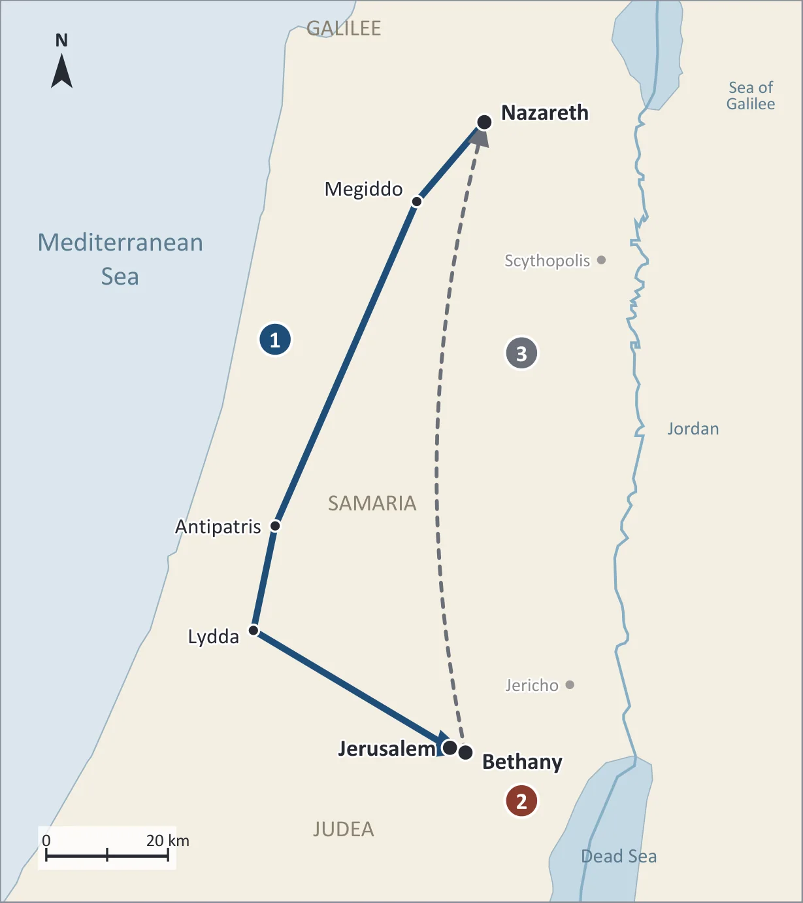
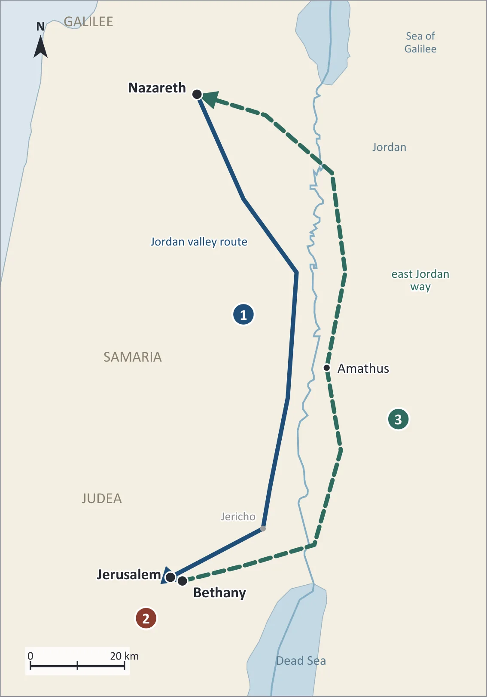
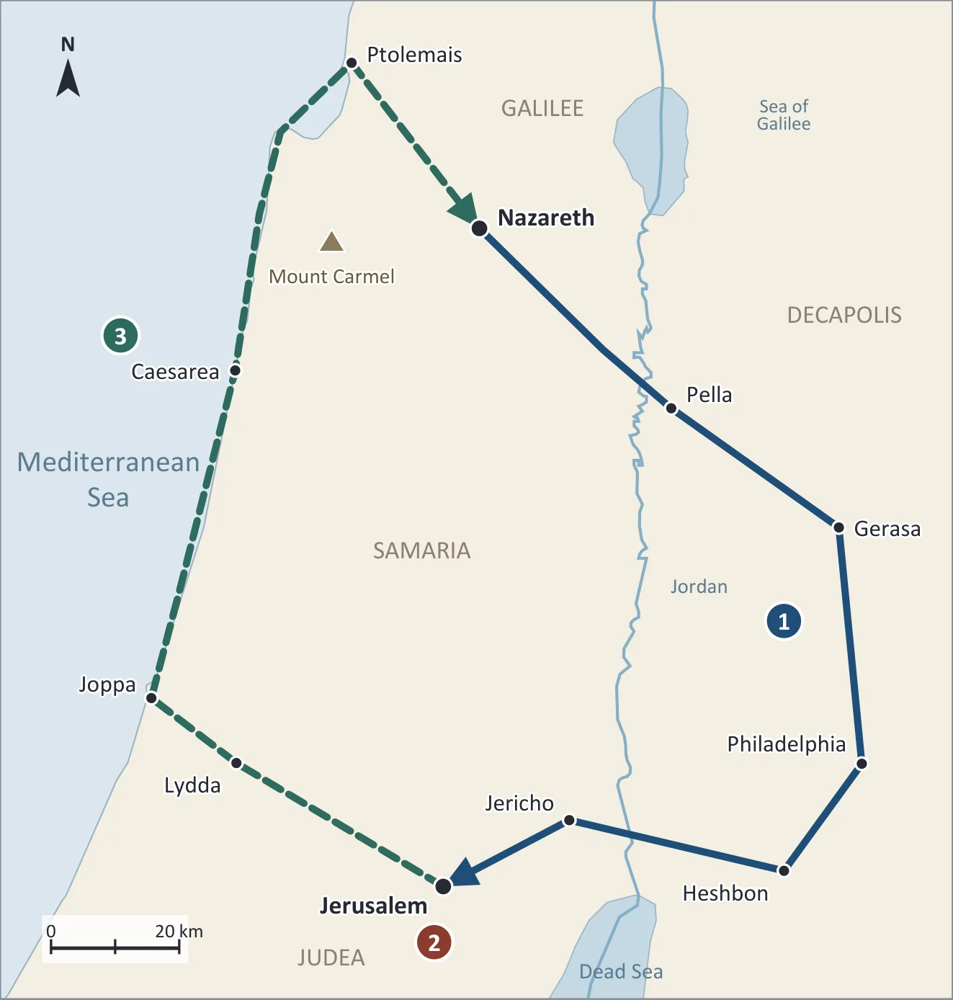
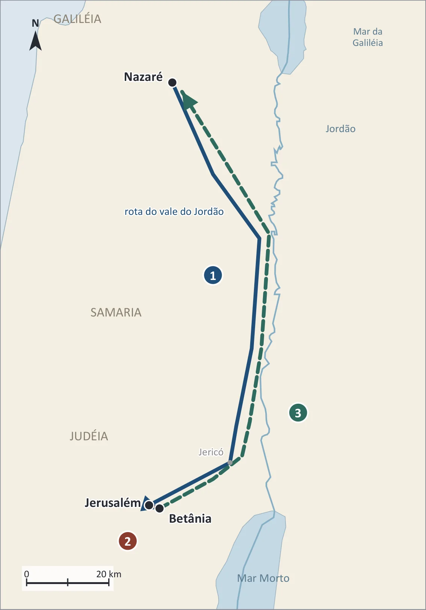
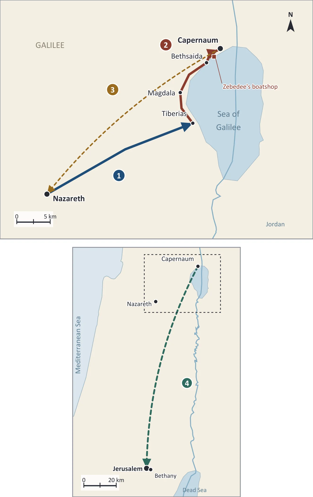

Parte I Do nascimento à idade adulta
Documentos 120–129
Documento 120A Auto-outorga de Michael em Urântia
| Acontecimento | O Livro de Urântia | Bíblia |
|---|---|---|
| 1. A Sétima Missão de Auto-outorga | 120:1.1–7 | Nenhum |
| Em Sálvington, o irmão e fiduciário de Michael o incumbiu da sua sétima e última auto-outorga. Desta vez Michael apareceria em Urântia como um bebê indefeso, inteiramente sujeito à vontade do seu Pai, enquanto o seu irmão assumia a jurisdição do universo e lhe garantia que nenhuma rebelião poderia ocorrer durante a sua ausência. | ||
| 2. As Limitações da Auto-outorga | 120:2.1–9 | Nenhum |
| O seu irmão expôs nove conselhos para a auto-outorga: crescer como uma criança de Urântia, encerrar tecnicamente a rebelião de Lúcifer como o Filho do Homem, atuar sobretudo como um mestre, derramar o Espírito da Verdade e revelar o Pai. Advertiu Michael a abster-se de qualquer vontade sobre-humana de poder depois da chegada do seu Ajustador do Pensamento. | ||
| 3. Conselhos e Exortações Adicionais | 120:3.1–12 | Nenhum |
| Depois de consultar Gabriel, o irmão acrescentou conselhos suplementares: seguir os costumes familiares aceitos na época, evitar envolver-se em assuntos econômicos e políticos, não fundar nenhuma seita, não deixar escritos nem retratos e, provavelmente, não se casar. Então, na presença de toda Sálvington reunida, Michael retirou-se do meio deles. | ||
| 4. A Encarnação — de Dois, Fazer Um | 120:4.1–6 | Nenhum |
| Cristo Michael era verdadeiramente um ser de origem dual, mas não uma dupla personalidade; ele era Deus encarnado no homem. Não se tornou Deus progressivamente, pois Jesus sempre foi Deus e homem. O propósito espiritual supremo da auto-outorga foi enriquecer a revelação de Deus. | ||
Documento 121A Época da Auto-Outorga de Michael
| Acontecimento | O Livro de Urântia | Bíblia |
|---|---|---|
| 1. O Ocidente, no Primeiro Século depois de Cristo | 121:1.1–9 | Nenhum |
| Quando Jesus nasceu, o mundo oferecia as condições mais favoráveis para a auto-outorga de um Filho Criador. Os sistemas políticos romanos, a língua e a cultura gregas e os ensinamentos religiosos e morais judeus unificavam o Ocidente, enquanto boas estradas e mares livres de piratas faziam florescer as viagens e o comércio. | ||
| 2. O Povo Judeu | 121:2.1–12 | Nenhum |
| Os judeus, o grupo mais influente dos povos semitas, viviam na Palestina, a encruzilhada de três continentes. As suas mais de duzentas sinagogas espalhadas pelo mundo romano tornaram-se bases para o novo evangelho, e sob Herodes, o idumeu, e mais tarde sob o seu filho Herodes Antipas, os judeus ansiavam por um Messias. | ||
| 3. Entre os Gentios | 121:3.1–10 | Nenhum |
| A sociedade mediterrânea do primeiro século dividia-se em cinco classes: a aristocracia, os grupos de negócios, a pequena classe média, o proletariado livre e os escravos. Metade da população do Estado romano era de escravos; no entanto, havia pouca consciência de classe, e o cristianismo não foi um movimento econômico. | ||
| 4. A Filosofia dos Gentios | 121:4.1–6 | Nenhum |
| O mundo gentio era dominado por quatro filosofias derivadas do platonismo: a epicurista, a estóica, a cínica e a cética. O estoicismo alcançou uma moralidade elevada, mas não conhecia Deus como um Pai, enquanto os cínicos, preservando remanescentes dos ensinamentos de Melquisedeque, ajudaram a preparar o povo comum para os missionários cristãos posteriores. | ||
| 5. As Religiões dos Gentios | 121:5.1–18 | Nenhum |
| As religiões do Ocidente incluíam os cultos pagãos, o culto ao imperador, a astrologia e as religiões de mistério. Os mistérios, com a sua promessa de salvação pessoal, prepararam o caminho para a difusão dos ensinamentos de Jesus; contudo, o cristianismo de Paulo superou-os por apoiar-se na redenção moral e num fato histórico. | ||
| 6. A Religião dos Hebreus | 121:6.1–9 | Nenhum |
| O pensamento religioso de Jerusalém fora fortemente influenciado pela cultura e pela filosofia gregas, muito ajudadas pela tradução grega das escrituras hebraicas. Filo de Alexandria harmonizou a filosofia grega com a teologia hebraica, e Paulo usou essa harmonização como alicerce para o seu culto cristão. | ||
| 7. Judeus e Gentios | 121:7.1–12 | Nenhum |
| Presos à lei e à tradição, os judeus não quiseram partilhar Yavé com os gentios e, assim, deixaram de tornar-se os mensageiros do novo evangelho. A evolução religiosa passou para o oeste, para a Europa, e o cristianismo de Antioquia, de Paulo, mesclou o evangelho de Jesus com a filosofia grega, os ensinamentos dos cultos de mistério e a moralidade judaica. | ||
| 8. Os Registros Escritos Anteriores | 121:8.1–14 | Nenhum |
| O autor intermediário explica que recorreu às anotações perdidas de André e aos quatro evangelhos. Marcos escreveu a partir das lembranças de Pedro, completando o seu evangelho no ano 68 d.C.; Isador escreveu o de Mateus em Pela, em 71; Lucas escreveu em Acáia, em 82; e Natam começou o Evangelho de João em 101, por insistência de João. | ||
Documento 122O Nascimento e a Infância de Jesusjunho de 8 a.C. – outubro de 6 a.C.
| Acontecimento | O Livro de Urântia | Bíblia |
|---|---|---|
| 1. José e Maria | 122:1.1–3 | Nenhum |
| José provinha de uma linhagem de artesãos hábeis, e Davi e Salomão não estavam na sua ascendência direta. A linhagem variada de Maria incluía mulheres notáveis como Tamar, Rute e Betsabá. Gabriel escolheu esse casal, ideal e ao mesmo tempo comum, como os pais da auto-outorga. | ||
| 2. Gabriel Aparece para Isabel | 122:2.1–8 | Lc 1:5-25 |
| No fim de junho de 8 a.C., Gabriel apareceu a Isabel ao meio-dia e anunciou que ela daria à luz João, o precursor de um mestre divino. Durante cinco meses ela não contou a ninguém, nem mesmo ao marido, e Zacarias, por muito tempo cético, só ficou plenamente convencido por um sonho cerca de seis semanas antes do nascimento de João.Difere da BíbliaO Evangelho de Lucas diz que um anjo apareceu a Zacarias enquanto ele queimava incenso no templo e o deixou mudo por causa da sua incredulidade, ao passo que O Livro de Urântia diz que Gabriel apareceu a Isabel e que Zacarias foi convencido mais tarde por um sonho. | ||
| Maria visita Isabel na cidade de Judá | 122:2.6 | Lc 1:39-56 |
| Gabriel apareceu a Maria por volta de meados de novembro de 8 a.C. Mais tarde, com o consentimento de José, Maria viajou à cidade de Judá, a sete quilômetros a oeste de Jerusalém, nas montanhas, para visitar Isabel. Ficou três semanas enquanto as duas comparavam as suas experiências, e Isabel fez muito para fortalecer a fé de Maria.Difere da BíbliaO Evangelho de Lucas diz que Maria ficou cerca de três meses, que a criança saltou no ventre de Isabel e que Maria cantou um hino de louvor, ao passo que O Livro de Urântia diz apenas que ela ficou três semanas enquanto as duas mulheres comparavam as suas experiências. | ||
| O nascimento de João (25 de março de 7 a.C.) | 122:2.7 | Lc 1:57-80 |
| João nasceu na cidade de Judá em 25 de março de 7 a.C. Zacarias e Isabel rejubilaram-se muito e, na sua circuncisão, ao oitavo dia, deram-lhe o nome de João, como lhes fora indicado. Um sobrinho de Zacarias já havia partido para Nazaré a fim de levar a notícia a Maria.Difere da BíbliaO Evangelho de Lucas diz que Zacarias escreveu o nome João numa tabuinha, recuperou a fala e profetizou, ao passo que O Livro de Urântia não menciona nem que ele tenha ficado mudo nem qualquer profecia. | ||
| 3. O Anúncio de Gabriel Feito a Maria | 122:3.1–4 | Lc 1:26-38 |
| Numa tarde, por volta do pôr do sol, no dia seguinte àquele em que Maria concebeu, Gabriel apareceu-lhe na sua casa em Nazaré e anunciou que ela daria à luz um filho chamado Joshua, que inauguraria o Reino do céu. Maria só contou a José semanas depois, e, após muito ponderar, ele concluiu que haviam sido escolhidos como pais do Messias.Difere da BíbliaO Evangelho de Lucas diz que uma virgem conceberia pelo Espírito Santo e que a criança receberia o trono de Davi, ao passo que O Livro de Urântia situa o anúncio no dia seguinte àquele em que Maria já havia concebido e não menciona nenhum trono de Davi. | ||
| 4. O Sonho de José | 122:4.1–4 | Mt 1:18-25 |
| José só se reconciliou depois de um sonho em que um mensageiro celeste lhe disse que no filho de Maria haveria vida, e que a sua vida se tornaria a luz da humanidade. José não era da linhagem de Davi; um antepassado órfão fora adotado por Zadoc, um descendente de Davi. Muitas profecias messiânicas foram aplicadas a Jesus muito tempo depois.Difere da BíbliaO Evangelho de Mateus diz que um anjo falou a José, filho de Davi, de uma concepção pelo Espírito Santo que cumpria a profecia da virgem, ao passo que O Livro de Urântia diz que nada foi dito sobre a casa de Davi e que a expressão “uma donzela” foi mais tarde mudada para “uma virgem”. | ||
| Mapa 6A velha Nazaré e o lar de Jesus4 a.C. – cerca de 28 d.C. | ||
| Mapa 2Nazaré e os seus arredores na infância3 a.C. – 8 d.C. | ||
| 5. Os Pais Terrenos de JesusMapa 2-① O lar em NazaréMapa 6-① O lar de Jesus | 122:5.1–11 | Nenhum |
| José era calado, reflexivo e adotava as concepções orientais, ou babilônicas, da religião judaica; Maria era alegre, prática e inclinava-se para a interpretação helenística, mais ampla. Casaram-se na casa de Maria, perto de Nazaré, quando José tinha vinte e um anos, e Jesus herdou a brandura do pai e o dom de mestra da mãe. | ||
| 6. O Lar em NazaréMapa 2-② A colina de SimeãoMapa 6-② A fonte da aldeiaMapa 6-⑤ A colina de SimeãoMapa 6-⑥ A horta da família | 122:6.1–3 | Nenhum |
| O lar de Jesus ficava perto da colina alta na parte norte de Nazaré, na orla da aldeia. Era uma casa de pedra de um só cômodo, com teto plano, mobiliada com uma mesa baixa de pedra, um tear e, no quintal dos fundos, um moinho e um forno. Depois do nascimento de Marta, José acrescentou um cômodo grande como oficina e quarto de dormir. | ||
| Mapa 1O nascimento de Jesus e a fuga para o Egitoagosto de 7 a.C. – outubro de 4 a.C. | ||
| 7. A Viagem a BelémMapa 1-① De Nazaré a Belém | 122:7.1–8 | Lc 2:1-5 |
| O censo de Augusto foi feito no reino de Herodes com um ano de atraso, em 7 a.C. Apesar das objeções de José, Maria insistiu em ir, e partiram de Nazaré em 18 de agosto, viajando pelo vale do Jordão e por Jericó. Chegando a Belém em 20 de agosto, alojaram-se num depósito de grãos dos estábulos escavados na rocha, abaixo da hospedaria.Difere da BíbliaO Evangelho de Lucas diz que José foi registrar-se porque era da casa de Davi, ao passo que O Livro de Urântia diz que Maria não precisava ir, mas escolheu acompanhá-lo, e que o censo foi adiado um ano pelos problemas de Herodes. | ||
| 8. O Nascimento de Jesus | 122:8.1–7 | Lc 2:6-7 |
| Ao meio-dia de 21 de agosto de 7 a.C., no alojamento do estábulo em Belém, Maria deu à luz Jesus com a ajuda de mulheres que viajavam com eles e o deitou numa manjedoura. No dia seguinte José registrou-se e a família mudou-se para a hospedaria; por desejo de Zacarias e de Isabel, permaneceram em Belém mais de um ano.Difere da BíbliaO Evangelho de Lucas diz apenas que o bebê foi deitado numa manjedoura porque não havia lugar na hospedaria, ao passo que O Livro de Urântia dá a data e a hora do meio-dia, a mudança para a hospedaria no dia seguinte e uma estada de mais de um ano. | ||
| A circuncisão e a imposição do nome ao oitavo dia | 122:8.2 | Lc 2:21 |
| A criança prometida nasceu em Belém exatamente do mesmo modo que todos os bebês antes e depois dela. Ao oitavo dia foi circuncidada segundo a prática judaica e recebeu formalmente o nome de Joshua (Jesus). | ||
| Os serafins cantam sobre a manjedoura | 122:8.5 | Lc 2:8-20 |
| No nascimento de Jesus, ao meio-dia, os serafins de Urântia cantaram hinos de glória sobre a manjedoura de Belém, mas os seus cantos não foram ouvidos por ouvidos humanos. Nenhum pastor nem outra criatura mortal veio prestar homenagem ao bebê até a chegada dos sacerdotes de Ur.Difere da BíbliaO Evangelho de Lucas diz que anjos e uma multidão celestial apareceram a pastores durante a noite e que os pastores vieram ver a criança, ao passo que O Livro de Urântia diz que os hinos seráficos não foram ouvidos e que nenhum pastor veio. | ||
| A visita dos sacerdotes de Ur | 122:8.6 | Mt 2:1-8 |
| Três sacerdotes de Ur, na Mesopotâmia, tinham ouvido dizer que a luz da vida apareceria na Terra como um bebê entre os judeus, e saíram à sua procura. Depois de semanas de buscas inúteis em Jerusalém, Zacarias enviou-os a Belém, onde encontraram o bebê, com quase três semanas de vida, e deixaram os seus presentes com Maria.Difere da BíbliaO Evangelho de Mateus diz que magos do Oriente seguiram uma estrela e indagaram de Herodes, ao passo que O Livro de Urântia diz que três sacerdotes de Ur vieram depois de ouvir falar do sonho de um mestre, e que Zacarias os encaminhou a Belém. | ||
| A lenda da estrela de Belém | 122:8.7 | Mt 2:9-12 |
| Os sábios de Ur não viram nenhuma estrela que os guiasse a Belém. A lenda da estrela surgiu mais tarde de conjunções naturais de Júpiter e Saturno na constelação de Peixes em 29 de maio, 29 de setembro e 5 de dezembro de 7 a.C., sobre as quais uma geração seguinte construiu a história da estrela e dos magos.Difere da BíbliaO Evangelho de Mateus diz que uma estrela guiou os magos e parou sobre o lugar onde estava a criança, ao passo que O Livro de Urântia diz que não houve tal estrela e que a lenda nasceu de uma conjunção de Júpiter e Saturno. | ||
| 9. A Apresentação no Templo | 122:9.1–28 | Lc 2:22-39 |
| José e Maria subiram ao templo em Jerusalém para apresentar o seu primogênito aos sacerdotes para o resgate e para oferecer o sacrifício da purificação de Maria. Zacarias, por meio de um sinal previamente combinado, indicou Jesus, e Simeão, um cantor, assombrou a todos cantando um poema escrito por Anna, uma poetisa.Difere da BíbliaO Evangelho de Lucas diz que Simeão, conduzido pelo Espírito Santo, tomou a criança nos braços e que Ana profetizou, ao passo que O Livro de Urântia diz que Zacarias identificou Jesus por um sinal previamente combinado e que o cântico era um poema que Anna havia escrito. | ||
| 10. Herodes AgeMapa 1-② Fuga para Alexandria, no Egito | 122:10.1–4 | Mt 2:13-23 |
| Alertado pelos sacerdotes de Ur e pelas notícias do cântico no templo, Herodes procurou a criança em vão e, por volta de meados de outubro de 6 a.C., ordenou que fossem mortos todos os meninos de menos de dois anos em Belém; dezesseis pereceram. Avisados por meio de Zacarias, José e Maria fugiram na noite anterior para Alexandria, onde ficaram dois anos inteiros.Difere da BíbliaO Evangelho de Mateus diz que um anjo do Senhor avisou José em sonho, ao passo que O Livro de Urântia diz que um crente da corte de Herodes informou Zacarias, e que o massacre de dezesseis bebês ocorreu mais de um ano depois do nascimento. | ||
Mapa 6A velha Nazaré e o lar de Jesus
4 a.C. – cerca de 28 d.C. · Documentos 122–150 · esboço de localização

- ①O lar de JesusUma casa de pedra de um só cômodo, com teto plano, construída por José com a ajuda de dois dos seus irmãos, com uma construção contígua para os animais e, no quintal dos fundos, o abrigo do forno e do moinho. Maria mantinha um pombal no alto da casa dos animais. Quando menino, ele brincava com João na areia em cima da casa. Ficava na periferia, mais ou menos a meio caminho entre o sopé da colina e a estrada de Caná. [122:5.9; 122:6.1–2; 123:3.4; 123:4.4]
- ②A fonte da aldeiaA fonte na parte leste da cidade, um centro de encontros e de mexericos para toda a cidade. Antes dos oito anos ele já havia conversado ali com as mães e as moças de Nazaré, e fez amizade com Natam, o oleiro que trabalhava perto da fonte. [122:6.1; 123:5.15]
- ③A oficina de reparos das caravanasA pequena oficina que José construiu em pleno verão de 3 a.C., perto da fonte da aldeia e junto ao local de parada das caravanas. Ali Jesus escutava os viajantes das caravanas vindos dos quatro cantos da Terra. No ano 12 d.C. ele começou a comprá-la de volta e trabalhou ali; as crianças juntavam-se junto à oficina para ouvir as suas histórias. [123:1.6; 127:3.1; 127:3.7; 128:6.11]
- ④A sinagogaQuando jovem, ele falou ali muitas vezes, e o manuscrito que mais tarde lhe foi entregue era um que ele mesmo havia doado a ela. Anos depois, após ele falar nessa sinagoga, uma turba o arrastou até a beira de uma colina íngreme próxima. [150:8.1; 150:9.3]
- ⑤A colina de SimeãoA colina alta na parte norte de Nazaré, uma das mais altas do sul da Galiléia. A partir do verão do seu décimo quarto ano, ele subia-a muitas vezes para orar e meditar; na sua oração no alto da colina, declarou-se sempre sujeito à vontade do seu Pai do Paraíso. [122:6.1; 126:1.1–2; 128:7.2]
- ⑥A horta da famíliaPor volta do seu décimo quinto ano, ele arrendou um terreno logo ao norte da casa e dividiu-o em lotes de horta para a família, que cultivava com os seus irmãos e irmãs mais novos. O seu passeio favorito era a trilha estreita que serpenteava para nordeste, contornando o sopé da colina, até a estrada de Séforis. [122:6.1; 126:5.10]
Mapa 2Nazaré e os seus arredores na infância
3 a.C. – 8 d.C. · Documentos 122–126

- ①O lar em NazaréUma casa de pedra de um só cômodo, construída por José com a ajuda de dois dos seus irmãos. Ficava na periferia, não longe da colina alta na parte norte da cidade, um pouco ao sul e a leste do promontório sul da colina, em direção à estrada de Caná, e a certa distância da fonte da aldeia. [122:5.9; 122:6.1–2]
- ②A colina de SimeãoA colina a noroeste de Nazaré. No verão do seu décimo quarto ano, ele subia-a muitas vezes para orar e meditar. Do cume avistava Meguido, Tanac, as colinas de Dotan, e Ebal e Gerizim, recordando a história do povo do seu pai (linhas pontilhadas). Exceto a cadeia do monte Tabor, a leste, e a colina de Naim, era a colina mais alta do sul da Galiléia. [122:6.1; 126:1.1–2]
- ③A fazenda do tioCasa de campo do irmão da sua mãe, na estrada de Megido, perto de Sarid, muitos quilômetros ao sul de Nazaré. Fugindo de uma epidemia em julho de 3 a.C., ficaram ali mais de dois meses, a sua primeira experiência numa fazenda; mais tarde ele a visitou muitas vezes. [123:1.7; 123:6.1; 124:3.1]
- ④O tio pescador em MagdalaDispensado da escola uma semana por mês por causa do seu bom aproveitamento, ele a passava muitas vezes com o seu tio pescador às margens do mar da Galiléia, perto de Magdala. O caminho não é dado no texto (tracejado). [123:6.1; 124:3.1]
Mapa 1O nascimento de Jesus e a fuga para o Egito
agosto de 7 a.C. – outubro de 4 a.C. · Documentos 122–123

- ①De Nazaré a Belém18–20 de agosto de 7 a.C. A viagem para registrar-se no censo. Contornando o sopé do monte Gilboa, a primeira noite junto ao rio Jordão; passando pelo pé do monte Sartaba até Jericó para a segunda noite; depois, por Jerusalém, até Belém. [122:7.4–6]
- ②Fuga para Alexandria, no EgitoMeados de outubro de 6 a.C., na noite anterior ao massacre das crianças. Viajaram sozinhos; o caminho não é dado no texto (tracejado). [122:10.4]
- ③De volta a Jopa, de barcoFim de agosto de 4 a.C., no barco do seu amigo Ezraeon. Foram diretamente para Belém e passaram ali todo o mês de setembro. [123:0.4]
- ④Regresso a NazaréInício de outubro de 4 a.C., passando por Lida e Sitópolis, com chegada no quarto dia. [123:0.6; 123:1.1]
Documento 123A Primeira Infância de Jesusagosto de 4 a.C. – 2 d.C.
| Acontecimento | O Livro de Urântia | Bíblia |
|---|---|---|
| Dois anos em Alexandria e o regresso ao larMapa 1-③ De volta a Jopa, de barcoMapa 1-④ Regresso a Nazaré | 123:0.1–6 | Nenhum |
| Em Alexandria, José trabalhou como carpinteiro e depois tornou-se capataz de operários numa construção pública, enquanto Jesus crescia saudável e recebia uma cópia grega das escrituras hebraicas. Após a morte de Herodes, a família navegou até Jopa, chegando no fim de agosto de 4 a.C., e no início de outubro José convenceu Maria a partir para Nazaré. | ||
| 1. De Volta a NazaréMapa 2-③ A fazenda do tioMapa 6-③ A oficina de reparos das caravanas | 123:1.1–7 | Mt 2:23; Lc 2:39-40 |
| Chegando a Nazaré no quarto dia, a família retomou a casa em que o irmão de José estivera morando. Jesus, com três anos e dois meses, fez amizade com um menino vizinho chamado Jacó. Tiago nasceu em 2 de abril de 3 a.C., e naquele verão José construiu uma oficina perto da fonte da aldeia e do pátio das caravanas.Difere da BíbliaO Evangelho de Mateus diz que se estabeleceram em Nazaré para cumprir a palavra de um profeta, e Lucas diz que voltaram logo depois de cumprir a lei, ao passo que O Livro de Urântia diz que voltaram depois de dois anos no Egito, por decisão do próprio José. | ||
| 2. O Quinto Ano (2 a.C.) | 123:2.1–16 | Nenhum |
| Em 11 de fevereiro de 2 a.C., um Ajustador do Pensamento veio residir em Jesus, embora ele não tivesse mais consciência disso do que as outras crianças. A sua irmã Míriam nasceu em 11 de julho, e quando Jesus completou cinco anos, em 21 de agosto, passou, segundo o costume galileu, à responsabilidade do pai para a sua educação. | ||
| Mapa 3Cidades galiléias visitadas com o pai1 a.C. – 5 d.C. | ||
| 3. Os Acontecimentos do Sexto Ano (1 a.C.)Mapa 3-① As obras de José | 123:3.1–10 | Nenhum |
| José ensinou grego a Jesus usando as escrituras recebidas em Alexandria. Jesus sofreu o seu primeiro grande choque quando o pai admitiu não saber o que causava um terremoto. No início do verão de 1 a.C., a família de Zacarias fez uma visita, e Jesus conheceu João; ele insistia em falar com o seu Pai no céu como falaria com José. | ||
| 4. O Sétimo Ano (1 d.C.) | 123:4.1–9 | Nenhum |
| Em janeiro do ano 1 d.C., uma grande tempestade de neve caiu sobre a Galiléia, e em julho Jesus feriu-se ao cair da escada de pedra durante uma tempestade de areia, um acidente que não poderia ter sido evitado. Os intermediários não interferem nos acidentes materiais, exceto por ordem dos superiores. O seu irmão José nasceu em 16 de março. | ||
| 5. Os Dias de Escola em Nazaré | 123:5.1–15 | Nenhum |
| Aos sete anos, Jesus entrou em agosto na escola da sinagoga de Nazaré, aprendendo o hebraico e a lei com o chazam, e graduou-se aos treze. Conversava em grego com os viajantes das caravanas, escolheu uma passagem de Isaías como o seu texto de aniversário e, aos sábados, subia as colinas com o pai para contemplar a Galiléia. | ||
| 6. O Seu Oitavo Ano (2 d.C.)Mapa 2-④ O tio pescador em Magdala | 123:6.1–9 | Nenhum |
| No seu oitavo ano, Jesus passava uma semana por mês com o seu tio pescador perto de Magdala ou na fazenda de outro tio, e dedicou-se à matemática e à harpa. Simão nasceu em 14 de abril. Nahor, um rabino enviado por instigação de Zacarias, insistiu em que ele estudasse em Jerusalém, mas, depois de falar com o seu Pai no céu, Jesus escolheu ficar em casa. | ||
Mapa 3Cidades galiléias visitadas com o pai
1 a.C. – 5 d.C. · Documentos 123–124

- ①As obras de JoséDurante vários anos depois de 1 a.C., José fez bastante trabalho em Caná, Belém (da Galiléia), Magdala, Naim, Séforis, Cafarnaum e En-dor. Quando Tiago já tinha idade para ajudar em casa, Jesus fazia viagens freqüentes com o pai a essas cidades, um observador atento que acumulava conhecimento sobre o homem e o seu modo de viver. [123:3.8]
- ②Viagens às cidades vizinhasQuando o trabalho e o movimento das caravanas diminuíam, ele ia com o pai às vizinhas Caná, En-dor e Naim. Visitava freqüentemente Séforis, a pouco mais de cinco quilômetros a noroeste de Nazaré, capital da Galiléia e uma das residências de Herodes Antipas (círculos). [124:1.12]
- ③A fazenda do tio e MagdalaNo ano 5 d.C., viajando com o pai, ele também visitava freqüentemente a fazenda do tio e ocasionalmente ia a Magdala pescar com o tio que tinha a sua base perto daquela cidade. [124:3.1]
- ④Os jogos em SitópolisPor volta de meados de maio do ano 5 d.C., ele foi com o pai numa viagem de negócios a Sitópolis (a antiga Betsean), a principal cidade grega da Decápolis. Insistiu em ver os jogos anuais das cidades da Decápolis no anfiteatro e ficou entusiasmado com eles. [124:3.6–7]
Documento 124A Segunda Infância de Jesus2 d.C. – abril de 7 d.C.
| Acontecimento | O Livro de Urântia | Bíblia |
|---|---|---|
| 1. O Nono Ano de Jesus (3 d.C.)Mapa 3-② Viagens às cidades vizinhas | 124:1.1–13 | Nenhum |
| No ano 3 d.C., Jesus contestou o ensinamento do chazam de que todas as imagens e figuras eram idólatras, e o seu desenho a carvão do professor levou os anciãos à casa de José. José sustentou o segundo mandamento, e Jesus obedeceu. No fim de junho ele subiu o monte Tabor com o pai, e Marta nasceu em 13 de setembro. | ||
| 2. O Décimo Ano (4 d.C.) | 124:2.1–10 | Nenhum |
| No sábado, 5 de julho do ano 4 d.C., caminhando com o pai, Jesus exprimiu pela primeira vez sentimentos que revelavam a sua crescente consciência da natureza incomum da sua missão. Entrou na escola adiantada da sinagoga e agitou Nazaré com as suas perguntas. Não lutava pelos seus direitos, e Jacó, o filho do pedreiro, o defendia. | ||
| 3. O Décimo Primeiro Ano (5 d.C.)Mapa 3-③ A fazenda do tio e MagdalaMapa 3-④ Os jogos em Sitópolis | 124:3.1–10 | Nenhum |
| Quando Judá nasceu, em 24 de junho do ano 5 d.C., Maria ficou gravemente doente, e Jesus, ainda sem onze anos, assumiu as responsabilidades de filho primogênito. Em maio visitou Sitópolis com o pai e viu os jogos gregos; a sua sugestão de construir um anfiteatro em Nazaré provocou a única vez em que ele viu o pai zangado com ele. | ||
| 4. O Décimo Segundo Ano (6 d.C.) | 124:4.1–9 | Nenhum |
| Aos doze anos, Jesus trabalhava regularmente na carpintaria da casa e administrava os seus próprios ganhos e, não compreendendo a sua natureza dual, passou por períodos de incerteza quanto à sua missão. Quando chamou de idolatria o ritual de tocar o pergaminho do batente da porta, José o retirou, e Jesus lutou para conciliar as suas convicções com a lealdade aos pais. | ||
| 5. O Seu Décimo Terceiro Ano (7 d.C.) | 124:5.1–6 | Lc 2:41-51 |
| O seu irmão mais novo, Amós, nasceu em 9 de janeiro do ano 7 d.C., e por volta de meados de fevereiro Jesus adquiriu a certeza humana de que estava destinado a cumprir uma missão na Terra. Em 20 de março graduou-se na escola da sinagoga de Nazaré como um filho do mandamento, mas pressentia que nunca estudaria em Jerusalém, como planejavam os anciãos.Difere da BíbliaO Evangelho de Lucas diz apenas que os seus pais subiam todos os anos para a Páscoa e o levaram quando ele tinha doze anos, ao passo que O Livro de Urântia diz que a sua graduação como filho do mandamento o habilitou para a sua primeira Páscoa. | ||
| Mapa 4A primeira subida a Jerusalém4–7 de abril de 7 d.C. | ||
| 6. A Viagem a JerusalémMapa 4-① De Nazaré a JezreelMapa 4-② Contornando o monte Gilboa até o vale do JordãoMapa 4-③ Passando o Jabok até o monte SartabaMapa 4-④ JericóMapa 4-⑤ Por Betânia até Jerusalém | 124:6.1–18 | Nenhum |
| Em 4 de abril do ano 7 d.C., um grupo de 103 pessoas partiu de Nazaré para Jerusalém pelo vale do Jordão. Em Betânia Jesus conheceu os filhos de Simão, Maria, Marta e Lázaro, iniciando uma amizade para a vida inteira. Na noite anterior ao sábado da Páscoa, um mensageiro comissionado por Emanuel disse-lhe que chegara a hora de ele cuidar dos assuntos do seu Pai. | ||
Mapa 4A primeira subida a Jerusalém
4–7 de abril de 7 d.C. · Documento 124

- ①De Nazaré a JezreelDe manhã cedo, na segunda-feira, 4 de abril do ano 7 d.C., um grupo de 103 pessoas partiu de Nazaré. Seguindo para o sul, passaram por Shunem, à esquerda; em Jezreel viraram para o leste para evitar passar pela Samaria. [124:6.1–3]
- ②Contornando o monte Gilboa até o vale do JordãoContornando o sopé do Gilboa, contemplaram a cidade grega de Sitópolis apenas de longe. Descendo para o sul pelo vale do Jordão, a pouco mais de três horas a partir do ponto em frente a Sitópolis, acamparam na primeira noite junto a uma fonte borbulhante. [124:6.3–5]
- ③Passando o Jabok até o monte SartabaNo segundo dia passaram pelo lugar onde o Jabok deságua no Jordão vindo do leste, e acamparam na segunda noite perto do sopé do monte Sartaba, cujo cume abrigava a fortaleza alexandrina. [124:6.6]
- ④JericóNo terceiro dia passaram por duas aldeias recém-construídas por Herodes e, ao anoitecer, chegaram a Jericó, onde ficaram até o dia seguinte. Naquela tarde caminharam dois quilômetros e meio até o local da antiga Jericó. [124:6.7]
- ⑤Por Betânia até JerusalémA subida do quarto dia até Jerusalém. Em Betânia, nas encostas orientais do monte das Oliveiras, pararam na casa de Simão e conheceram Maria, Marta e Lázaro. Do topo do monte das Oliveiras Jesus viu pela primeira vez a Cidade Santa e o templo; na quinta-feira à tarde entraram em Jerusalém e hospedaram-se na casa de um parente abastado de Maria. [124:6.8–12]
Documento 125Jesus em Jerusalémabril de 7 d.C.
| Acontecimento | O Livro de Urântia | Bíblia |
|---|---|---|
| Mapa 5Jerusalém e o temploabril de 7 d.C., a sua primeira Páscoa | ||
| (Introdução)Mapa 5-① Primeira visita ao templo | 125:0.1–7 | Nenhum |
| Jesus recusou-se a ir a menos que a sua mãe viesse, e assim Maria também subiu. No templo, ele se ressentiu da separação da sua mãe na galeria das mulheres e decepcionou-se com os ritos de consagração, feitos por mera formalidade. Disse a José que o Pai no céu não podia olhar com ira para os seus filhos que erram. | ||
| 1. Jesus Visita o Templo | 125:1.1–5 | Nenhum |
| No pátio dos gentios, Jesus ficou chocado com o clamor dos cambistas e dos mercadores e indignado com as cortesãs que desfilavam no recinto do templo. Enojado com a matança e o sangue no pátio dos sacerdotes, pediu ao pai que o levasse embora, e José conduziu-o à porta da beleza e explicou-lhe as festas. | ||
| 2. Jesus e a PáscoaMapa 5-② A Páscoa em BetâniaMapa 5-③ As conferências de ensino e o santo dos santos | 125:2.1–12 | Nenhum |
| Cinco famílias de Nazaré celebraram a Páscoa na casa de Simão de Betânia, onde Jesus relatou a origem da Páscoa. Começou a cogitar uma Páscoa sem derramamento de sangue e, durante toda a semana, ouviu as discussões do templo entre os novos filhos do mandamento e conversou com mais de cento e cinqüenta jovens. | ||
| 3. A Partida de José e MariaMapa 5-④ A caravana parte | 125:3.1–2 | Lc 2:41-44 |
| No primeiro dia da semana seguinte à Páscoa, o grupo de Nazaré partiu, com homens e mulheres viajando em grupos separados. Jesus, absorto numa discussão do templo sobre os anjos, ficou para trás; Maria supôs que ele estava com os homens, e José, que estava com as mulheres, de modo que só deram pela sua falta quando chegaram a Jericó.Difere da BíbliaO Evangelho de Lucas diz apenas que os pais supunham que ele estivesse na caravana, ao passo que O Livro de Urântia explica que homens e mulheres viajavam separadamente, cada um dos pais supondo que ele estava com o outro, enquanto Jesus estava absorto numa discussão sobre os anjos. | ||
| 4. O Primeiro e o Segundo Dias no TemploMapa 5-⑤ Entre Betânia e o templo | 125:4.1–4 | Lc 2:45 |
| Jesus ouviu as discussões da tarde e passou a noite na casa de Simão, em Betânia. No dia seguinte, no topo do monte das Oliveiras, chorou pelo povo e depois juntou-se ousadamente às discussões com perguntas. Interrogado sobre a sua idade, respondeu que tinha treze anos menos quatro meses, mas decidiu-se que ele poderia continuar nas discussões.Difere da BíbliaO Evangelho de Lucas diz que Jesus tinha doze anos, ao passo que O Livro de Urântia diz que lhe faltavam pouco mais de quatro meses para os treze e que ele havia sido graduado tecnicamente antes do tempo em Nazaré e consagrado na Páscoa. | ||
| José e Maria voltam a JerusalémMapa 5-⑥ Os seus pais voltam para procurá-lo | 125:4.2 | Lc 2:45 |
| Enquanto Jesus chorava pelo povo no topo do monte das Oliveiras, cedo naquela manhã, e seguia para o templo, José e Maria levantaram-se ao amanhecer para refazer os seus passos até Jerusalém. Primeiro foram aos parentes com quem se haviam hospedado durante a semana da Páscoa, mas ninguém o tinha visto; depois de procurar o dia todo, voltaram ali para passar a noite.Difere da BíbliaO Evangelho de Lucas diz apenas que os pais voltaram a Jerusalém à procura dele, ao passo que O Livro de Urântia diz que primeiro procuraram na casa dos parentes, enquanto Jesus passava as noites na casa de Simão, em Betânia. | ||
| 5. O Terceiro Dia no Templo | 125:5.1–10 | Nenhum |
| No terceiro dia, muitos espectadores juntaram-se enquanto Jesus interrogava os mestres durante mais de quatro horas. Perguntou o que realmente existe no santo dos santos, por que as mães são segregadas, por que se matam animais, se o comércio no templo é correto e se o Messias há de ser um príncipe temporal. Os seus pais passaram pelo templo várias vezes sem encontrá-lo. | ||
| 6. O Quarto Dia no TemploMapa 5-⑦ De volta ao lar | 125:6.1–13 | Lc 2:46-51 |
| No quarto dia, o dirigente fez Jesus sentar-se ao seu lado para expor as suas idéias sobre a oração e a adoração, e os seus pais, parando no templo a caminho da casa de Zacarias, reconheceram a sua voz. Quando Maria o repreendeu, ele disse que era tempo de cuidar dos assuntos do seu Pai, e no monte das Oliveiras, a caminho de casa, clamou sobre Jerusalém.Difere da BíbliaO Evangelho de Lucas diz que os pais o encontraram no templo depois de três dias, ao passo que O Livro de Urântia diz que o encontraram no quarto dia, por acaso, quando iam à casa de Zacarias, e que ele se lamentou sobre Jerusalém no caminho de volta. | ||
Mapa 5Jerusalém e o templo
abril de 7 d.C., a sua primeira Páscoa · Documento 125

- ①Primeira visita ao temploNa semana da Páscoa ele foi consagrado como um filho da lei. Indignou-se por a sua mãe ter de ir para a galeria das mulheres. Os cambistas e os vendedores no pátio dos gentios e a matança no pátio dos sacerdotes chocaram-no e enojaram-no. José mostrou-lhe a “porta da beleza” e, a partir da praça superior, passearam, vendo o palácio Asmoneano, a imponente casa de Herodes e a torre dos guardas romanos. [125:0.4–5; 125:1.1–5]
- ②A Páscoa em BetâniaCinco famílias de Nazaré comeram a Páscoa com a família de Simão de Betânia. Na quarta-feira da semana da Páscoa, Jesus foi para casa com Lázaro para passar a noite em Betânia. [125:2.1–2; 125:2.7]
- ③As conferências de ensino e o santo dos santosLázaro levou-o a explorar Jerusalém. À parte algumas visitas ao santo dos santos para contemplar o que havia atrás do véu, passou a maior parte do tempo nas conferências de ensino em torno do templo. [125:2.5–6]
- ④A caravana parteNo primeiro dia da semana seguinte à festa, o grupo reuniu-se perto do templo e seguiu em direção a Betânia. Absorto numa discussão sobre os anjos, Jesus ficou para trás; os seus pais só o perceberam quando chegaram a Jericó. [125:3.1–2]
- ⑤Entre Betânia e o temploDepois das discussões da tarde, passou a noite na casa de Simão, em Betânia. Cedo no dia seguinte deteve-se e chorou no topo do monte das Oliveiras, depois juntou-se às discussões do templo e de novo passou a noite em Betânia. Na manhã seguinte foi ao templo sem parar (tracejado: o caminho de volta). [125:4.1–4; 125:6.1–2]
- ⑥Os seus pais voltam para procurá-loAo amanhecer do dia seguinte, os seus pais refizeram os seus passos até Jerusalém e procuraram o dia todo, primeiro na casa dos parentes. No terceiro dia, parando no templo a caminho da casa de Zacarias, encontraram-no sentado entre os mestres, depois de procurá-lo por mais de três dias. [125:4.2; 125:6.4–5]
- ⑦De volta ao larEm silêncio partiram, chegando a Jericó para passar a noite. Só uma vez pararam, no topo do monte das Oliveiras, onde ele clamou sobre Jerusalém. Eram três dias de viagem até Nazaré. [125:6.8–10]
Documento 126Os Dois Anos Cruciais8 d.C. – 9 d.C.
| Acontecimento | O Livro de Urântia | Bíblia |
|---|---|---|
| (Introdução) | 126:0.1–4 | Nenhum |
| O décimo quarto e o décimo quinto anos foram os mais cruciais da vida terrena de Jesus. Depois de voltar de Jerusalém, ele passou mais tempo com o pai, enquanto os seus pais não conseguiam compreendê-lo. Nazaré louvava as suas proezas entre os sábios do templo e esperava que ele se tornasse um grande mestre. | ||
| 1. O Seu Décimo Quarto Ano (8 d.C.) | 126:1.1–7 | Nenhum |
| No ano 8 d.C., Jesus tornou-se um hábil fabricante de cangas e carpinteiro, e no verão subia para orar a colina onde ficava o túmulo de Simeão, contemplando Meguido, Tanac e Dotan. José reservou fundos para os seus estudos em Jerusalém, mas os seus pais começaram a duvidar do destino de um filho que não fazia milagres. | ||
| 2. A Morte de José | 126:2.1–8 | Nenhum |
| Em 25 de setembro do ano 8 d.C., José foi mortalmente ferido pela queda de um guindaste enquanto trabalhava na residência do governador em Séforis e morreu antes que Maria chegasse até ele. Jesus, com pouco mais de catorze anos, tornou-se o chefe da família, cuidando da mãe viúva, de sete irmãos e de uma criança ainda por nascer, e os seus planos de estudar em Jerusalém desmoronaram. | ||
| 3. O Décimo Quinto Ano (9 d.C.) | 126:3.1–14 | Nenhum |
| Rute, a filha caçula, nasceu em 17 de abril do ano 9 d.C. Em outubro, Jesus escreveu a carvão, numa tábua de cedro, uma oração da família que mais tarde se tornou a oração do Senhor. Lendo o Livro de Enoch na biblioteca da sinagoga, decidiu adotar o título de Filho do Homem e convenceu-se de que não era o Messias judeu. | ||
| 4. O Primeiro Sermão na Sinagoga | 126:4.1–9 | Nenhum |
| No primeiro sábado depois do seu décimo quinto aniversário, por arranjo do chazam, Jesus dirigiu o serviço da manhã na sinagoga de Nazaré, entretecendo passagens de Isaías, Amós, Micas e outros profetas. O povo maravilhou-se com o seu porte solene e cheio de autoridade, e naquela tarde ele escreveu os Dez Mandamentos em grego em duas tábuas. | ||
| 5. A Luta Financeira | 126:5.1–12 | Nenhum |
| A família vivia cada vez mais modestamente, e, trabalhando de manhã cedo até tarde, Jesus ganhava apenas uns vinte e cinco centavos por dia. Para que não caíssem nas mãos dos cobradores de impostos, ele deu as suas escrituras gregas à sinagoga, e quando Herodes decidiu que nada era devido a José pelo seu trabalho, Jesus nunca mais confiou em Herodes Antipas. | ||
Documento 127Os Anos da Adolescência10 d.C. – 14 d.C.
| Acontecimento | O Livro de Urântia | Bíblia |
|---|---|---|
| 1. O Décimo Sexto Ano (10 d.C.) | 127:1.1–8 | Nenhum |
| No ano 10 d.C., aos dezesseis anos, Jesus atingiu o seu pleno crescimento físico e reunia as qualidades de um amigo compreensivo às de um mestre cheio de autoridade. Foi preciso vender outra casa, e Tiago encarregou-se de ensinar as suas três irmãs em casa. Ele praticamente decidiu só começar a sua obra pública depois de criar a família. | ||
| 2. O Décimo Sétimo Ano (11 d.C.) | 127:2.1–12 | Nenhum |
| No ano 11 d.C., organizadores nacionalistas vieram a Nazaré, mas Jesus recusou-se a aderir. A sua mãe, o seu tio e até Tiago insistiram com ele, e Isaac, um rico emprestador de dinheiro, ofereceu-se para sustentar a família; no entanto, Jesus alegou o seu dever para com a família, declarando que o dinheiro não pode amar, e um discurso de Tiago apaziguou a crise. | ||
| Mapa 7A Páscoa com Tiagoprimavera de 12 d.C. | ||
| 3. O Décimo Oitavo Ano (12 d.C.)Mapa 7-① Pela Samaria até JerusalémMapa 7-② A Páscoa em BetâniaMapa 7-③ O templo e o topo do monte das OliveirasMapa 7-④ De volta ao lar por Jericó e pelo vale do Jordão | 127:3.1–15 | Nenhum |
| No ano 12 d.C., Jesus levou Tiago à Páscoa pela Samaria e presidiu a Páscoa em Betânia como chefe da família; nas discussões do templo não fez nenhuma pergunta. Em setembro, Isabel e João fizeram uma visita, e os primos combinaram não se encontrar de novo até a sua obra pública. Em 3 de dezembro, Amós morreu de uma febre alta. | ||
| 4. O Décimo Nono Ano (13 d.C.) | 127:4.1–10 | Nenhum |
| No ano 13 d.C., Jesus convenceu a sua mãe a adotar uma educação positiva, incentivando as crianças a fazer o bem, em vez de simplesmente proibir o mal. Governou os seus irmãos e irmãs com justiça e amor e tornou-se o verdadeiro chefe da casa. Para pagar as despesas escolares de Judá, vendeu a sua amada harpa. | ||
| 5. Rebeca, a Filha de Ezdras | 127:5.1–6 | Nenhum |
| Rebeca, a filha mais velha de Esdras, um rico mercador de Nazaré, apaixonou-se por Jesus e declarou os seus sentimentos na festa do seu décimo sétimo aniversário. Jesus explicou-lhe com bondade que o seu dever de criar a família do seu pai não o deixava livre para casar-se. De coração partido, Rebeca mudou-se para Séforis, mas esperou por ele e o seguiu durante toda a vida. | ||
| Mapa 8A terceira visita pascal a Jerusalémprimavera de 14 d.C. | ||
| 6. O Seu Vigésimo Ano (14 d.C.)Mapa 8-① De Nazaré a JerusalémMapa 8-② Betânia, o lar de LázaroMapa 8-③ De volta a Nazaré | 127:6.1–16 | Nenhum |
| No ano 14 d.C., Jesus subiu para a Páscoa por Meguido e Lida e, em Betânia, com Lázaro, Marta e Maria, celebrou a primeira Páscoa sem o cordeiro pascal, usando pão ázimo e vinho. Adiou todo pensamento de casamento até que chegasse a sua hora e estava no limiar da plena idade adulta. | ||
Mapa 7A Páscoa com Tiago
primavera de 12 d.C. · Documento 127

- ①Pela Samaria até JerusalémNo ano 12 d.C., aliviada a pressão financeira, Jesus levou o seu irmão Tiago à Páscoa. Subiram um dia antes, caminhando pela Samaria. Ele refletiu muito em Betel e ao beber do poço de Jacó, e discutiram as tradições de Abraão, Isaac e Jacó. [127:3.1–3]
- ②A Páscoa em BetâniaComeram a ceia da Páscoa em Betânia. Simão já havia sido sepultado, e Jesus, tendo trazido o cordeiro pascal do templo, presidiu como chefe da família pascal. Depois da ceia conversou com Marta e Lázaro até tarde da noite. [127:3.4–5]
- ③O templo e o topo do monte das OliveirasNo dia seguinte, Tiago foi recebido na comunidade de Israel no templo. Naquela manhã, olhando o templo do topo do monte das Oliveiras, Jesus contemplou Jerusalém em silêncio. Voltaram a Betânia para passar a noite (tracejado); no dia seguinte, por insistência de Tiago, ouviram as discussões do templo, mas Jesus não fez nenhuma pergunta. [127:3.5]
- ④De volta ao lar por Jericó e pelo vale do JordãoNo dia seguinte viajaram de volta para casa por Jericó e pelo vale do Jordão, e ele contou a sua viagem por essa estrada aos treze anos. De volta a Nazaré, começou a trabalhar na velha oficina de reparos da família. O caminho além do alto vale do Jordão não é dado no texto. [127:3.6–7]
Mapa 8A terceira visita pascal a Jerusalém
primavera de 14 d.C. · Documento 127

- ①De Nazaré a JerusalémEle subiu por Meguido, Antipátris e Lida, levando quatro dias e percorrendo em parte o caminho feito no regresso do Egito. Em Meguido refletiu muito sobre os acontecimentos passados daquele campo de batalha. [127:6.3–4]
- ②Betânia, o lar de LázaroPassando por Jerusalém, deteve-se apenas para olhar o templo e seguiu para Betânia. Com Lázaro, Marta e Maria, partilhou a primeira Páscoa sem o cordeiro pascal, com pão ázimo e vinho. [127:6.5–7]
- ③De volta a NazaréAo voltar para casa contou tudo isso à sua mãe. O caminho de volta não é dado no texto (tracejado). [127:6.7]
Documento 128O Início da Vida Adulta de Jesus15 d.C. – 20 d.C.
| Acontecimento | O Livro de Urântia | Bíblia |
|---|---|---|
| Mapa 9A quarta visita pascal — com o seu irmão Joséprimavera de 15 d.C. | ||
| 1. O Vigésimo Primeiro Ano (15 d.C.)Mapa 9-① Pelo vale do Jordão até JerusalémMapa 9-② A Páscoa em BetâniaMapa 9-③ Pelo caminho a leste do Jordão, passando por Amatus | 128:1.1–15 | Nenhum |
| Tendo chegado à idade adulta, Jesus, plenamente consciente da sua natureza dual, pôs-se seriamente a experimentar a vida da mais baixa criatura inteligente. Até o seu batismo não usou nenhum poder sobrenatural. Nesse ano levou José a Jerusalém para a Páscoa, descendo pelo vale do Jordão e voltando pelo caminho a leste do Jordão. | ||
| 2. O Vigésimo Segundo Ano (16 d.C.) | 128:2.1–7 | Nenhum |
| Nesse ano Simão foi trabalhar com Jacó, o pedreiro, e Jesus passou seis meses em Séforis aprendendo o ofício de ferreiro. Antes de partir, instituiu formalmente Tiago, com pouco mais de dezoito anos, como chefe interino da família, começando a desacostumar gradualmente a família da dependência dele. | ||
| Mapa 10A quinta visita pascal — com o seu irmão Simãoprimavera de 17 d.C. | ||
| 3. O Vigésimo Terceiro Ano (17 d.C.)Mapa 10-① Pela Decápolis até JerusalémMapa 10-② JerusalémMapa 10-③ De volta ao lar pela estrada do litoral | 128:3.1–9 | Nenhum |
| Jesus levou Simão à Páscoa em Jerusalém pela Decápolis e voltou pela estrada do litoral. Em Filadélfia conheceu um mercador de Damasco, e em Jerusalém conversou durante quatro horas com um jovem helenista chamado Estevão sobre o modo de vida e sobre o verdadeiro Deus. | ||
| 4. O Episódio de Damasco | 128:4.1–9 | Nenhum |
| Jesus passou os últimos quatro meses do ano em Damasco como hóspede do mercador. O mercador e os seus financiadores pediram-lhe que dirigisse uma escola de filosofia religiosa destinada a superar Alexandria, mas Jesus recusou, sabendo que a sua missão não devia ser sustentada por instituições de ensino. | ||
| 5. O Vigésimo Quarto Ano (18 d.C.) | 128:5.1–9 | Nenhum |
| Em meados de junho, em Cesaréia, cinco judeus eminentes de Alexandria pediram a Jesus que se tornasse um mestre religioso na sua cidade, mas ele respondeu que a sua hora ainda não havia chegado e recusou a bolsa que lhe ofereceram. Em dezembro consentiu no casamento de Tiago e Esta dali a dois anos. | ||
| Mapa 11A sexta visita pascal — com o seu irmão Judáprimavera de 19 d.C. | ||
| 6. O Vigésimo Quinto Ano (19 d.C.)Mapa 11-① Pelo vale do Jordão até JerusalémMapa 11-② Jerusalém: a prisão e o cárcere militarMapa 11-③ Uma noite em Betânia, depois Nazaré | 128:6.1–12 | Nenhum |
| Pagas as dívidas da família, Jesus levou Judá à Páscoa em Jerusalém. Quando Judá denunciou um guarda romano e foi preso, Jesus ficou com ele no cárcere e defendeu a sua causa perante o magistrado militar, que o soltou. Essa foi a última Páscoa a que Jesus assistiu com algum membro da sua família. | ||
| 7. O Vigésimo Sexto Ano (20 d.C.) | 128:7.1–14 | Nenhum |
| Jesus tornou-se fortemente consciente do seu poder potencial, mas decidiu permanecer sujeito à vontade do seu Pai. Em novembro, um duplo casamento uniu Tiago e Esta, e Míriam e Jacó, e no dia seguinte Jesus deu a oficina de reparos a Tiago, instituiu-o como chefe da casa e preparou-se para deixar o lar. | ||
Mapa 9A quarta visita pascal — com o seu irmão José
primavera de 15 d.C. · Documento 128

- ①Pelo vale do Jordão até JerusalémTendo levado Tiago ao templo para a consagração, julgou que era seu dever levar José. Foram pela habitual estrada do vale do Jordão e, descendo o Jordão, Jesus narrou a José a história dos judeus. [128:1.14]
- ②A Páscoa em BetâniaComo era seu costume quando estava em Jerusalém, passou a Páscoa com os seus três amigos em Betânia. À maioria das perguntas de José ele respondia apenas: “A minha hora ainda não chegou”. [128:1.15]
- ③Pelo caminho a leste do Jordão, passando por AmatusVoltaram pela estrada a leste do rio, e ele falou a José das legendárias tribos de Rubem, Gad e Gilead, que, segundo a tradição, haviam habitado aquelas regiões. [128:1.14]
Mapa 10A quinta visita pascal — com o seu irmão Simão
primavera de 17 d.C. · Documento 128

- ①Pela Decápolis até JerusalémAno 17 d.C. Jesus deixou o trabalho por três semanas para levar Simão a Jerusalém para a Páscoa. Subiram por Pela, Gerasa, Filadélfia, Hesbom e Jericó. [128:3.1–2]
- ②JerusalémUm mercador de Damasco que haviam conhecido em Filadélfia insistiu em que ficassem com ele na sua sede em Jerusalém. Simão foi recebido na comunidade de Israel na consagração pascal, e perto do palácio Asmoneano Jesus conheceu um jovem helenista chamado Estevão e conversou com ele durante quatro horas. [128:3.3–5]
- ③De volta ao lar pela estrada do litoralPartindo no domingo seguinte à semana da Páscoa, passaram por Lida, Jopa e Cesaréia, contornaram o monte Carmelo até Ptolemais e chegaram em casa na quinta-feira ao meio-dia. [128:3.2; 128:3.7]
Mapa 11A sexta visita pascal — com o seu irmão Judá
primavera de 19 d.C. · Documento 128

- ①Pelo vale do Jordão até JerusalémAno 19 d.C. Jesus acompanhou Judá, que acabava de graduar-se na escola da sinagoga, na sua primeira visita ao templo. Temendo problemas se levasse o irmão jovem pela Samaria, foi e voltou pelo vale do Jordão. [128:6.3–4]
- ②Jerusalém: a prisão e o cárcere militarA caminho do templo encontraram Lázaro de Betânia. Quando um guarda romano fez comentários impróprios sobre uma moça judia que passava, o desabafo de Judá levou à sua prisão, e ele foi levado ao cárcere militar, com Jesus ao seu lado. Na manhã seguinte ao segundo dia no cárcere, Jesus compareceu perante o magistrado militar em favor de Judá, e eles foram soltos. [128:6.5–7]
- ③Uma noite em Betânia, depois NazaréForam a pé até Betânia para passar a noite, explicando por que não tinham comparecido à ceia pascal, e partiram para Nazaré no dia seguinte. Essa foi a última Páscoa a que Jesus assistiu com algum membro da sua família. [128:6.8–9]
Documento 129A Vida Adulta de Jesus21 d.C. – 23 d.C.
| Acontecimento | O Livro de Urântia | Bíblia |
|---|---|---|
| Mapa 12O estaleiro de Zebedeu e Jerusalémjaneiro de 21 d.C. – abril de 22 d.C. | ||
| 1. O Vigésimo Sétimo Ano (21 d.C.)Mapa 12-① De Nazaré a TiberíadesMapa 12-② Por Magdala e Betsaida até CafarnaumMapa 12-③ O casamento de Marta | 129:1.1–15 | Nenhum |
| Em janeiro do ano 21 d.C., Jesus deixou a família e foi para Cafarnaum, onde durante pouco mais de um ano construiu barcos com Zebedeu, criando um novo tipo de barco e novos métodos de construção. Morou na casa de Zebedeu, estudou na sinagoga e, entre os trabalhadores, foi chamado pela primeira vez de o Mestre. | ||
| 2. O Vigésimo Oitavo Ano (22 d.C.)Mapa 12-④ A Jerusalém | 129:2.1–11 | Nenhum |
| Em março do ano 22 d.C., Jesus confiou a João Zebedeu o dinheiro mensal da sua família e foi para Jerusalém, onde Anás lhe mostrou as academias. Durante a semana da Páscoa conheceu um rico viajante da Índia e o seu filho, e concordou, com um ano de salário pago adiantado, em acompanhá-los como intérprete e tutor. | ||
| 3. O Vigésimo Nono Ano (23 d.C.) | 129:3.1–9 | Nenhum |
| Jesus passou todo o seu vigésimo nono ano na viagem pelo Mediterrâneo, conhecido como o Escriba de Damasco. Apenas Zebedeu conheceu os fatos dessa viagem. Ele conheceu e amou toda espécie de homens, e ao fim dela praticamente sabia que era um Filho de Deus. | ||
| 4. O Jesus Humano | 129:4.1–8 | Nenhum |
| Durante esse período, a experiência religiosa puramente humana do Filho do Homem quase atingiu o seu ápice. Ele viveu a vida mortal do começo ao fim, na alegria e na tristeza, tornando-se não um modelo a copiar, mas um caminho novo e vivo pelo qual os outros podem viver as suas próprias vidas pelos mesmos meios. | ||
Mapa 12O estaleiro de Zebedeu e Jerusalém
janeiro de 21 d.C. – abril de 22 d.C. · Documento 129

- ①De Nazaré a TiberíadesUma manhã chuvosa de domingo, em janeiro do ano 21 d.C. Explicando apenas que ia a Tiberíades e depois a outras cidades à volta do mar da Galiléia, despediu-se da família. Passou uma semana na nova cidade de Tiberíades, mas encontrou pouca coisa que o interessasse. [129:1.1–2]
- ②Por Magdala e Betsaida até CafarnaumVisitou Zebedeu, o construtor de barcos, amigo do seu pai, e associou-se ao seu empreendimento, construindo um novo tipo de barco durante pouco mais de um ano. As oficinas de construção de barcos ficavam junto ao lago, ao sul de Cafarnaum; a casa de Zebedeu, onde Jesus morou, ficava perto de Betsaida. [129:1.2–4]
- ③O casamento de MartaEm outubro daquele ano voltou a Nazaré para assistir ao casamento de Marta. O caminho não é dado no texto (tracejado). [129:1.6]
- ④A JerusalémEm março do ano 22 d.C., despediu-se de Zebedeu e de Cafarnaum e partiu para Jerusalém. Durante quase dois meses ouviu as discussões do templo, passando a maioria dos sábados em Betânia. Celebrou a Páscoa com a família de Zebedeu, que havia subido, na casa de Anás. O caminho não é dado no texto (tracejado). [129:2.1; 129:2.6–8]
Os atos de Jesus em O Livro de Urântia — O Novo Testamento e O Livro de Urântia